Every component in this course begins with Starter files. You know there are starter files if the lesson includes a starter file link.
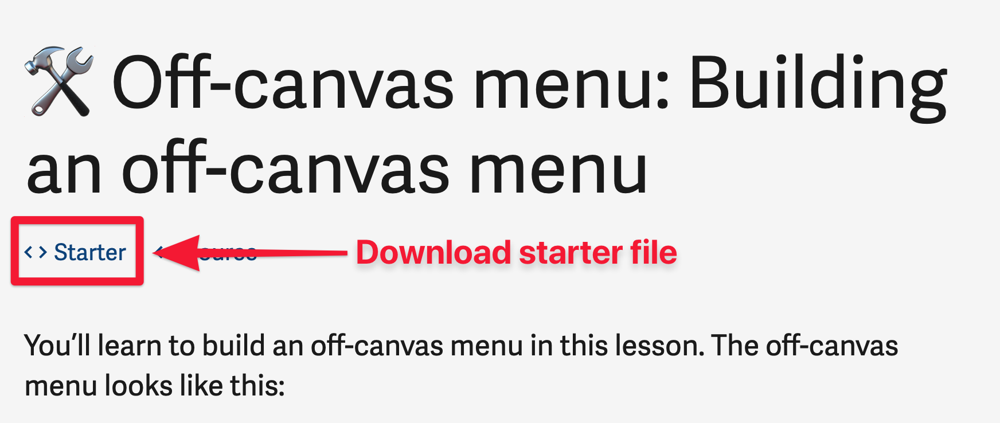
What you'll see if lesson contains starter files
Each lesson includes a link to the source code. Source code contains the HTML, CSS, and JavaScript by the end of each lesson. It lets you check your work versus mine.
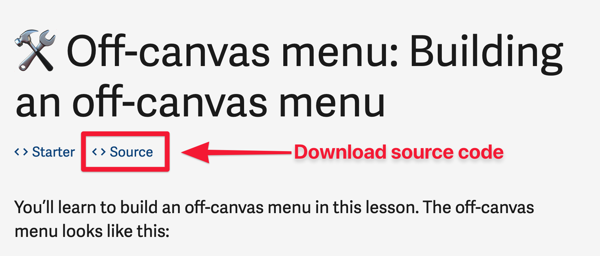
What you'll see if lesson contains source code
You can also find starter files and source code by going to the components page.
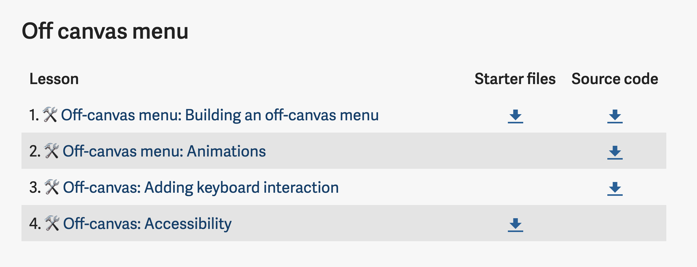
A Note on Starter files
Starter files contain HTML and CSS. You don’t need to understand all of the HTML and CSS I provided you with. They’re there to make components look good (so you actually feel good building the components!).
You’ll learn the HTML and CSS you need to know as you go through the practical lessons. (Practical lessons are marked with 🛠️).
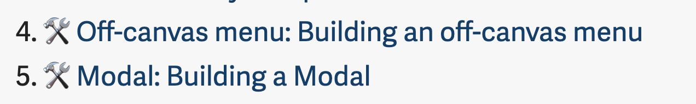
Using the Starter files (and source code)
You can open HTML of the starter file directly by clicking on them. Here’s what you see if you open the Starter files for off-canvas menu.
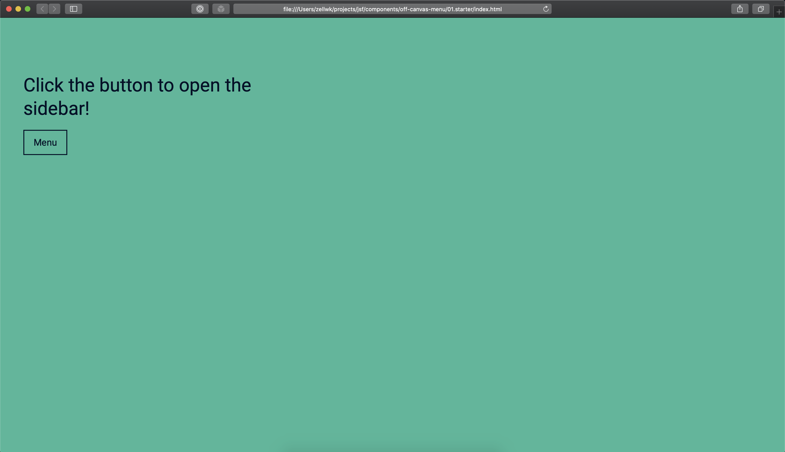
I do not recommend clicking on the starter files directly because it uses the file:// protocol. The file:// protocol is different from the http:// or https:// protocols (which we use for actual websites).
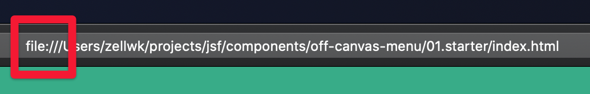
file protocol
Here’s what you’ll see if you use http:// protocol. (You don’t see the http:// part because browsers hide them from us).
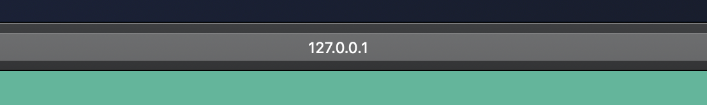
Actual website uses http or https protocol
Things that work on http:// (and https://) may not work on file://. For example, you won’t see the hand icon if you open the Modal component’s starter files with file:// protocol.
Hand icon can be seen when you're on http:// protocol.Hand icon cannot be seen when you're on file:// protocol.
When we code, we want to use the http:// protocol so our sites function exactly as how they would behave on actual websites.
How to use the http:// protocol
The best way is to use http-server.
First, install Node from Node’s website. Get the LTS Version. It’ll prevent most Node-based errors from happening. You can also install Node with Homebrew (Mac) or Chocolatey (Windows).
After you install Node, you need to install http-server. To do this, open up a Terminal and run the following command.
npm -g install http-server
Mac users may need to include a sudo keyword before the command:
sudo npm -g install http-server
Next, go to the project in your Terminal.
The easiest way is to open the project in Visual Studio Code.
Mac: Drag the folder into Visual Studio Code
Windows: Right click on the folder and select open with Code.
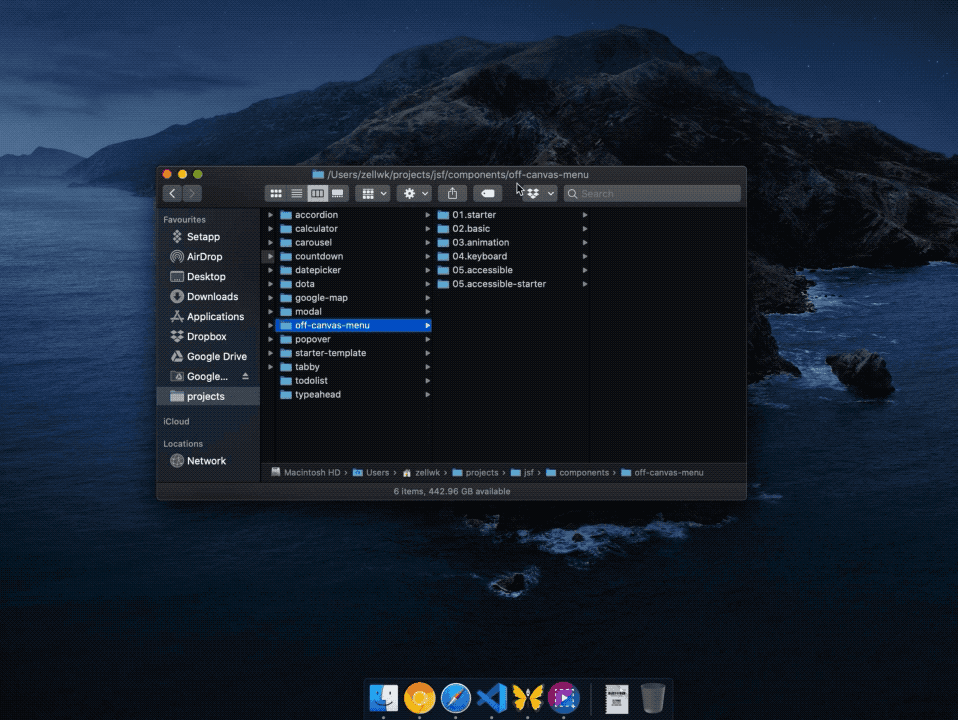
Opening a project with Visual Studio Code on Mac
Opening a project with Visual Studio Code on Windows.
Open the Integrated Terminal inside Visual Studio Code. To do this, find the Terminal menu at the top and select New Terminal.
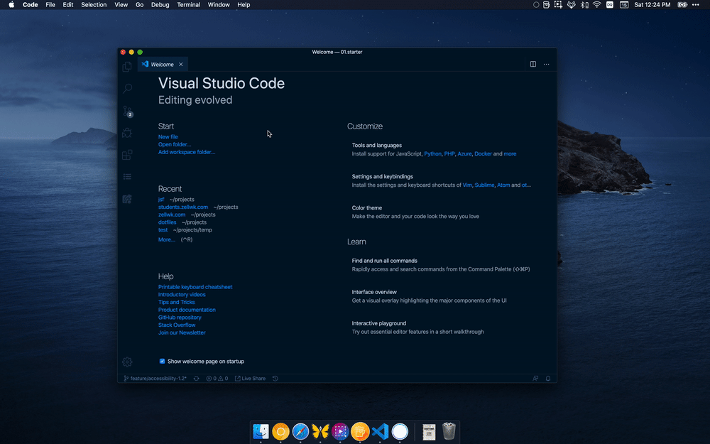
Run the http-server command.
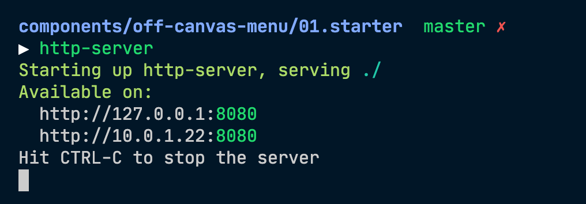
Once you run http-server, you can copy-paste the addresses that appear to see your project.
Now open up your browser and go to http://127.0.0.1:8080. You should be able to see the project.
You can also use the second link (10.0.1.22:8080 in my case) if you want to view the project through another device, like a phone or tablet.
Disabling cache
Important: Browsers automatically cache websites so they can load it faster the next time round. When you use http-server you need to disable cache.
Open your developer tools. Go to Network. Check disable cache.
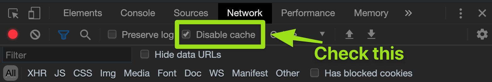
Disables cache on Chrome
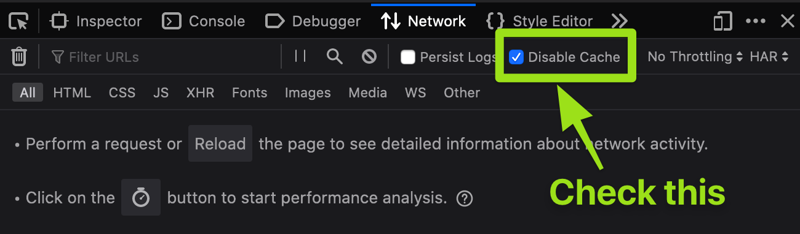
Disables cache on Firefox
http-server vs Live Server
Some students told me they use Visual Studio Code’s Live Server extension instead of http-server. It’s easier for them because Live Server refreshes their page automatically when they save a file.
I like (and actually use) automatic-refreshing capabilities when I code. But I don’t use Live Server because it hangs randomly. Sometimes I save and it doesn’t refresh, so Live Server gives me more trouble compared to http-server.
I wrote more about development setup in another book called Automate Your Workflow. Check it out if you’re curious to hear more about my workflow.
The Starter Template
If you wish to create your own components from scratch (without using my HTML and CSS), you can use the Starter Template.
The Starter Template contains the meta tags you need. It also links you to three CSS files:
normalize.css: which irons out CSS differences between browsers
reset.css: a CSS reset I use as the starting point for all my projects. You can read more about my CSS reset here.
styles.css: the CSS file you need to edit your project with
The starter template also links to one JavaScript file, main.js. This is the file you’ll use for all your JavaScript code.
Don’t use the starter template for production
You can use the starter template for development purposes.
For production, you want to minimize your CSS and JavaScript files, so people can access your website faster. If you want to learn how to make a production-ready template, read Automate Your Workflow.